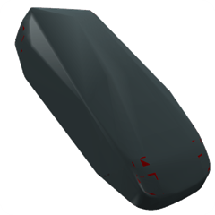
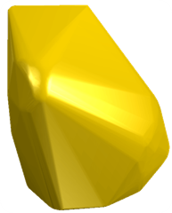
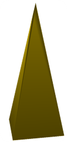
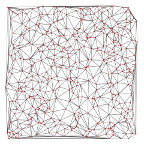
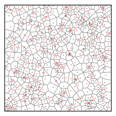
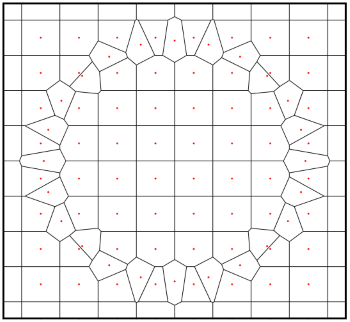
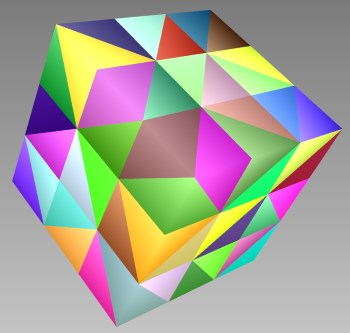

Project Description
This project is a convex hull algorithm and library for 2D, 3D, and higher dimensions. The code can also be used to compute Delaunay triangulations and Voronoi meshes of the input data.
The code is written in C# and provides a template based API that allows extensive customization of the underlying types that represent vertices and faces of the convex hull. The algorithm itself is technically an implementation of the QuickHull algorithm. Nevertheless, it's not just a simple port of QHull as a different approach and data structures are used by the MIConvexHull algorithm.
Examples
The timings are illustrative and were obtained on Core i7-5930 using the version from Dec 20 2014 and the Helix Studio example.
| 26328 vertices: Convex hull in 0.009s. Triangulation in 0.743s. | 34835 vertices: Convex hull in 0.018s. Triangulation in 1.225s. |
|  |  |
| 26332 vertices: Convex hull in 0.003s. Triangulation in 0.761s. | 500 2D vertices - Delaunay Triangulation and Voronoi Mesh. |
|  |   |
| Voronoi mesh of regular grid with an ellipse inside. | Delaunay triangulation of regular grid |
|  |  |